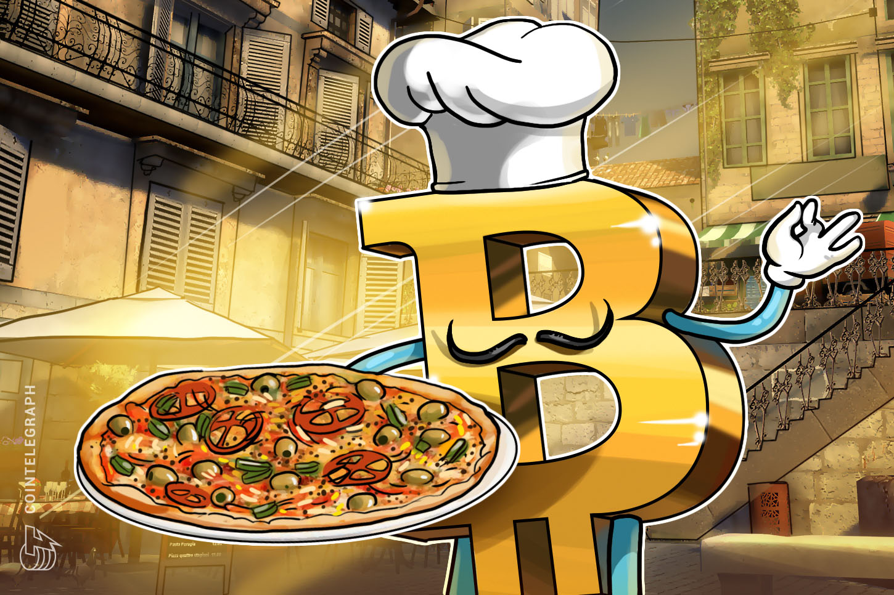
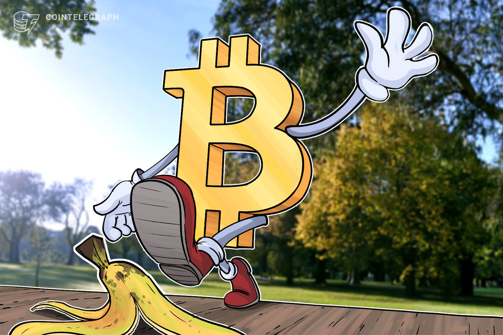

|
| Bitcoin es la criptomoneda más popular hoy en día. Desde su creación hace aproximadamente una década, cada día más personas se unen a la ola creyente en las ventajas que ofrece. Sin embargo, hay cosas que quizás no sabias sobre ella y aquí te las contamos. |
- Interesante teoría sobre quien podría ser Satoshi Nakamoto
|
|
Como quizás ya sabes, hasta el momento se desconoce la identidad del creador o los creadores de Bitcoin. No obstante, hay muchas teorías al respecto pero esta es una que quizás llame tu atención.
Algunos han sugerido que detrás del Bitcoin se encuentran las siguientes compañías: Samsung, Toshiba, Nakamichi. «Satoshi Nakamoto«: Sa msung y Toshi ba – Satoshi / Naka michi y Moto rola – Nakamoto.
Naka michi y Moto rola – Nakamoto
La veracidad de esto es cuestionable, pero es interesante la idea… ¿ no? |
| La primera compra con Bitcoin se hizo en 2010 y fue una pizza |
|  |
Actualmente, el Bitcoin es mucho más popular de lo que lo fue en 2010, ya que en ese momento no tenían casi valor. Costaba centavos adquirirlos. Por eso su empleo como método de pago es muy distinto hoy que lo que era en 2010.
No fue sino hasta el 22 de mayo de 2010, cuando se hizo a primera compra usando Bitcoin, y fue para comprar una pizza. Por eso se dice que este día se considera el Día de la Pizza Bitcoin
Sin embargo, te vas a impresionar cuando sepas la cantidad que Laszlo Hanyecz intercambió por dos pizzas de Papa John’s: ¡Fueron 10.000 BTC!
Actualmente, el Bitcoin es mucho más popular de lo que lo fue en 2010, ya que en ese momento no tenían casi valor. Costaba centavos adquirirlos. Por eso su empleo como método de pago es muy distinto hoy que lo que era en 2010.
No fue sino hasta el 22 de mayo de 2010, cuando se hizo a primera compra usando Bitcoin, y fue para comprar una pizza. Por eso se dice que este día se considera el Día de la Pizza Bitcoin
Sin embargo, te vas a impresionar cuando sepas la cantidad que Laszlo Hanyecz intercambió por dos pizzas de Papa John’s: ¡Fueron 10.000 BTC! |
| Si pierdes tu clave privada, pierdes tus criptomonedas. Esto le ocurrió a alguien más |
|  |
James Howells es el desafortunado que perdió 7.500 Bitcoin en noviembre de 2013, ya que mientras limpiaba su casa, botó un disco duro que tenía las claves privadas de esta cantidad de Bitcoin que minó tres años antes.
Este hombre cayó en cuenta de su error al ver en las noticias historias de personas que se habían vuelto millonarias al comprar BTC baratas en sus inicios.
Calcula tú ahora el precio de esas 7500 BTC y llora con James. Sin esas claves privadas básicamente perdió sus fondos para siempre, y nadie puede tener acceso a ellos tampoco.
Por lo tanto, ¡no pierdas nunca de vista estas claves! |
| Hay un límite de producción: solo habrán 21 millones de BTC |
|
Así como lees, solo 21 millones. Por ello, se estima que más del 99% estará en circulación para 2040 y el último 1% se minará alrededor de 2140.
Después de esta fecha, no podrán ser minadas más monedas Bitcoin. Por ende, muchas personas en la actualidad están interesadas en adquirir Bitcoin como método de inversión más que como método de pago.
|
| Un error llevó a la creación accidental de 184.000 millones de BTC en 2010 |
|
Conocido como el incidente del desbordamiento del valor, este error llevó a la creación accidental de un gran número de monedas en agosto de 2010 a la altura del bloque 74638.
El error se corrigió luego de 5 horas, creando un cliente Bitcoin parcheado (versión 0.3.10) que ignoraba el exceso de monedas. Como la mayoría de los mineros y nodos aceptaron a este nuevo cliente, el error fue «bifurcado» y borrado de la Blockchain. |